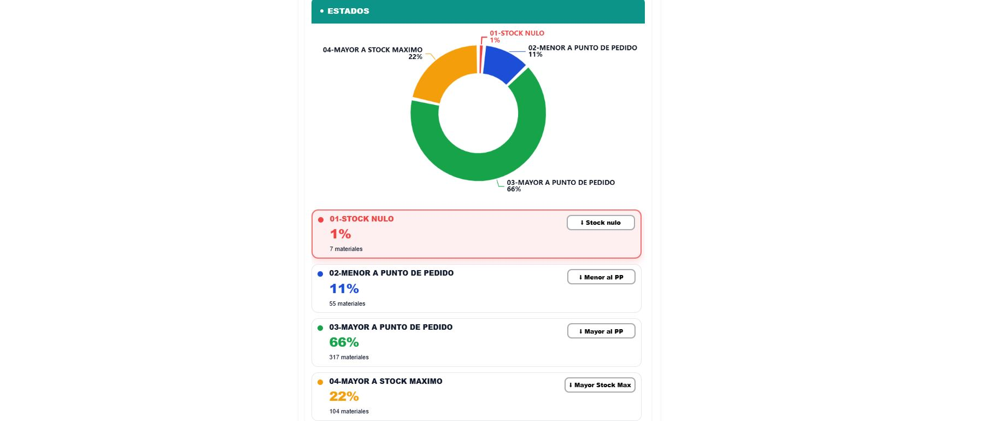
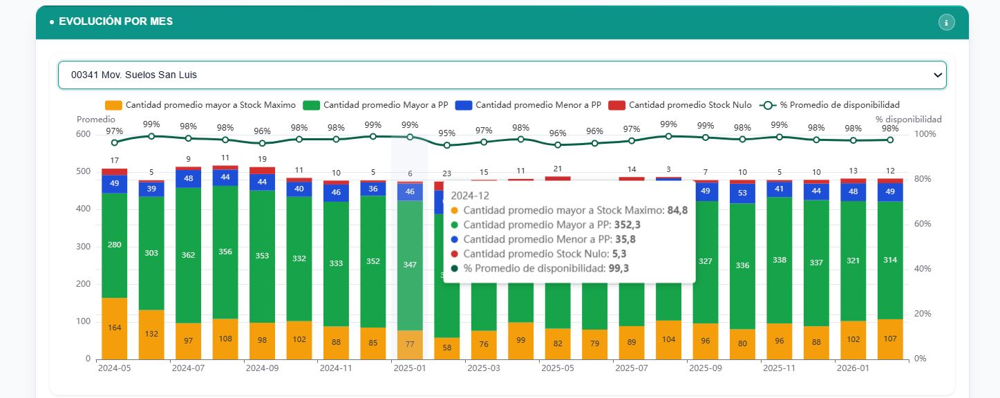
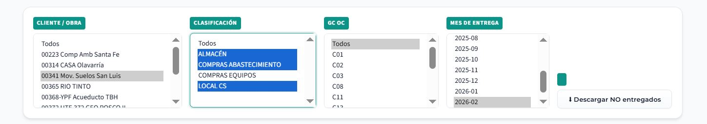
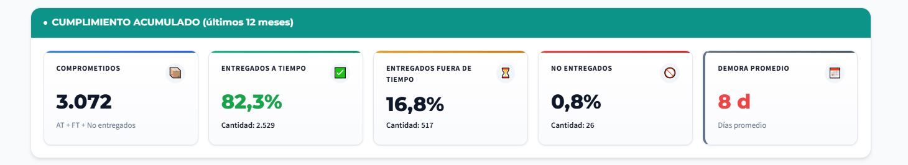
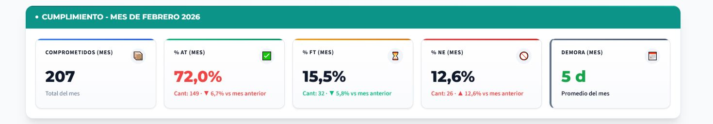
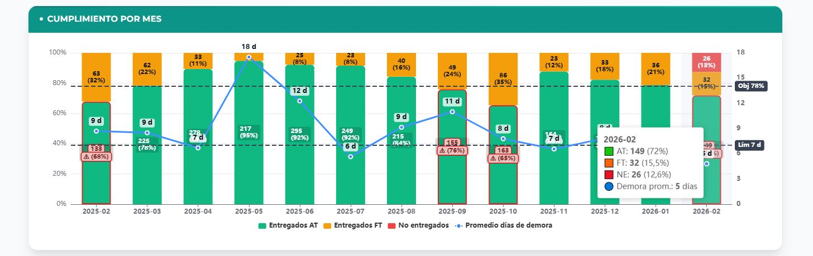
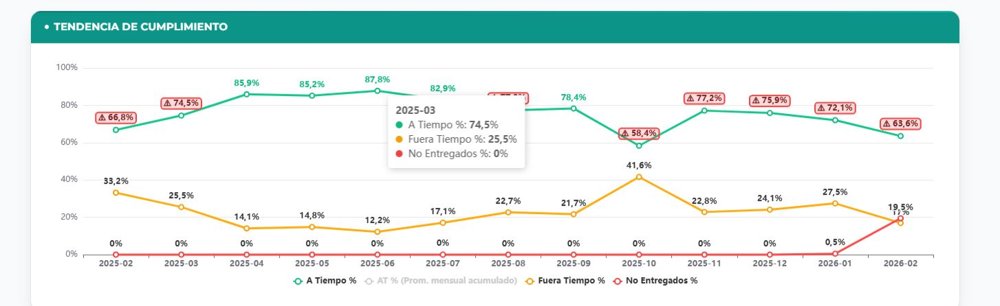

📊 ¿Cómo utilizar el Dashboard de Abastecimiento?





⚠️ Importante: Tener en cuenta
🔹¿Que mide? El cumplimiento de los pedidos que surgen de una las VA tipo ZPAI, ZPAN, ZPAS y ZPOE cuyo cliente es una obra de cualquier sociedad (no tiene en cuenta solped y oc directas)
🔹¿Como mide? Es Cumplido a Término (AT) si la fecha de sello de almacenamiento en obra ≤ fecha de entrega esperada en VA (este indicador mide la totalidad del ítem indicado en la VA, no parciales).
🔹 Características: La demora promedio se calcula solo sobre entregas demoradas.
🔹 Limitaciones: No se incluyen servicios (GC 24, 25, 26, 33, 16, 04) ni items tipo “Servicios”.

LOCAL CS: agrupa GC01,GC02,GC07.
AGV: GCAGV COMPRAS ABASTECIMIENTO: GC SEDE + COMPRADORES EXCLUSIVOS.
(BUSCAR UN EJEMPLO QUE TENGA COMPRAS EQUIPOS MM Y REP)
En estas tarjetas se muestra el cumplimiento acumulado de la obra seleccionada de los últimos 12 meses, independientemente del mes que hayamos filtrado.

La segunda fila de tarjetas muestra solo el mes que filtramos (Feb-2026). Y hacemos el mismo analisis, podemos notar que el % ENTREGADO AT esta en rojo porque no alcanzo el 78% establecido y los dias de demora figura en verde porque esta por debajo de los 7 dias.



🔹Entregados a término (AT)
🔹Entregados fuera de término (FT)
🔹No entregados (NE)
🔹Promedio mensual acumulado(AT)


🔴En este caso hubo 35 ítems con demoras en el mes seleccionado
🔴El área con mayor cantidad de demoras en el mes fue COMPRAS
🔴Con un porcentaje del 37,5%.

🔴El área con mayor cantidad de demoras se identifica con el color rojo
🔵Tener en cuenta que un items con demora puede estar demorado en varias ÁREAS al mismo tiempo. EJEMPLO:


Este gráfico muestra la distribución porcentual de las demoras por área en el mes que se encuentra seleccionado en el filtro.
El área con mayor cantidad de demoras se muestra en rojo
“Muestra la cantidad de demoras por mes y por área (tener en cuenta que una demora puede repetirse en varias áreas)”
🔥 ¿Qué significa el color?
🔴 Rojo → Mayor cantidad de demoras
🟠 Naranja → Nivel medio
🟡 Amarillo → Nivel bajo
⚪ Blanco → Muy bajo

Este gráfico muestra el motivo de las demoras correspondientes al área Proyecto, desagregadas por tipo de causa.
La causa con mayor cantidad de demoras se muestra en rojo
- Verde: Certificación al día según el período.
- Rojo: Demora en la última certificación (ej: más de 30 días para servicios mensuales).
- Próximo a vencer: Fecha de entrega esperada dentro de los próximos 45 días.
- Vencido con cant. pendiente: La fecha de entrega ya pasó, pero aún restan recepciones.
- En curso: Servicio activo dentro de los plazos normales.